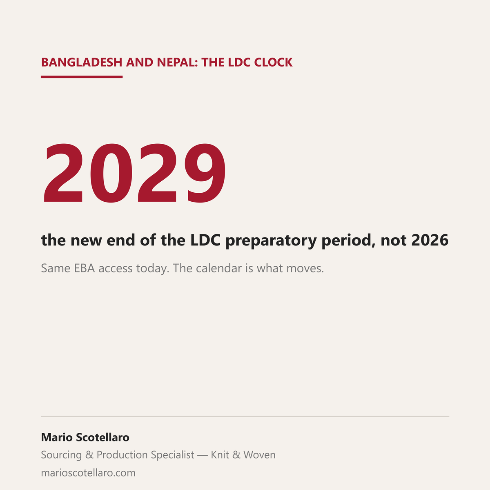

On 29 October the UN General Assembly adopted the resolution that postpones the end of the preparatory period before Bangladesh leaves the least developed country category. The date moves from 24 November 2026 to 24 November 2029, on an exceptional basis. Nepal received the same extension.
Nothing changes today for garments shipped from Bangladesh to the EU. They keep entering under EBA (Everything But Arms), which the European Commission describes as duty free and quota free access with no expiry date. What moves is the calendar. According to the Commission's April 2026 factsheet on the new GSP, applicable from 1 January 2027, countries graduating from LDC status keep EBA preferences for three years afterwards. The clock that factories and buyers were planning around now starts later, and how the EU applies its three years to the new date is still to be seen.
For a factory, it is more time to invest and prepare for what comes after EBA. For a buyer, it is a longer horizon for sourcing decisions, but not a guarantee: the UN committee's view recalled in the text is that the extension is appropriate if the country advances on the reforms that address its structural vulnerabilities.
Both sides are reading the same date, and it is worth having it on the table when the next seasons are planned.
Sources: UN General Assembly, press release GA/12802, 29 October 2026 · Draft resolution A/81/L.8, 20 October 2026 · The Kathmandu Post, on Nepal, 30 October 2026 · European Commission, factsheet The New EU Generalised Scheme of Preferences, April 2026